Sagebrush steppe and ponderosa parkland: how I learned it
By the steppe student. What I'd teach from it is in TUTORIAL.md. My raw working thread, every step and every image I opened, is the notebook.
I had one working session of 1 hour 47 minutes, on the night of 25 September 2026: 276 steps, 120 images looked at. This page tells it in order, dead ends included, with the code and the grunt work. The how-tos teach the parts that worked. This is how I found them.

Where it ended: the sage flat at golden hour.
The brief, and what I read first
The brief: learn to paint the dry east of Washington (big sagebrush, bitterbrush, bunchgrass, ponderosa pine in open parkland, and the basalt and loess ground under them) in Mark Ferrari's painterly pixel language, true to the living subject. The studio had nothing for the east side yet. The deliverables were a LESSONS.md with stage images, the technique as code with parameters, and labelled sheets sweeping plant × density × season × light × distance × seed.
Before painting I read, in this order:
- SYNTHESIS.md, the studio's notes on what earlier students found. What I took: paint indices, not colours; two light families that never touch; clean runs for narrow forms, but a mass ends in a fringe, never an outline; contrast lives inside the mark; the lit colour stays with distance while the shadow colour changes. And David's note that the substance is a portfolio of specific tuned techniques, each with a reference image, not one general algorithm.
- The willow student's LESSONS and CRITIQUE, because David thought the willow might beat the studio's trees. The build order was master copy → one bush in grey → marks → colour → clumps → context → sheets. The critic's twelve rounds were more useful than the lessons, because they named failure modes before I made them:
- flat grey shadow ellipses that read as holes;
- a size ladder that vanishes at 3 px;
- a ruled flat foot on every bush;
- the same silhouette in every cell.
I built defences against the second and fourth from the start. I still made the first. - The grass-lod critic's notes: step the zoom 1.25× at a time, never 4×, or you can't see the pops. - The naturalist desk's guide 09, "The dry east". It gave me the plant list, the calendar, and a painter's section: - green March to May, straw by July, cheatgrass purple-red in May; - balsamroot yellow in April and May; - "each shrub a soft rounded dot with a dark shadow"; - biological soil crust as a dark lumpy skin between plants; - ponderosa as "orange trunks standing apart on tan or green grass", with needle tufts catching the light as starbursts.
Their photo folders had the best single images I used all night.

The naturalist desk's sagebrush_steppe_Washington/ sheet. The Seedskadee frame (bottom left) and Coulee City (right, middle) did the most work.
The grunt work: photos
python3 ~/work/pixelart-studies/tools/imgfetch.py "<query>" -n 12 -o <dir> --sheet, ten queries in parallel, then six more:
| query | what came back |
|---|---|
| "big sagebrush shrub" | two landscapes, one macro, two people planting shrubs, a scanned brochure |
| "sagebrush steppe washington" | mostly the same frames the plant desk had |
| "bluebunch wheatgrass", "idaho fescue" | seed heads close up, a few meadows |
| "ponderosa pine tree open" | a Flagstaff courthouse, a downtown street, pollen cones |
| "ponderosa pine parkland" | one excellent overlook (Agropyron spicatum and Pinus scopulorum) and many needles |
| "ponderosa pine savanna" | Turnbull NWR, eastern Washington pine savanna: the best pine photo I found |
| "sagebrush winter snow" | eight usable winter steppe frames (Redmond Caves, Seedskadee) |
| "sagebrush aerial", "sagebrush drone" | a lighthouse, helicopters, Carson City, a drone in the sky |
| "sagebrush hillside" | Sagebrush Hillside Morning Light: sage seen obliquely from above, the only iso reference I got |
Openverse is fast and literal. "Aerial" means photos of aircraft. Queries naming a place ("Turnbull", "Seedskadee", "Moses Coulee") beat queries naming a look.

The sagebrush_hillside sheet. Top middle: morning light on a sage slope from above.
Stage 0: which Ferrari?
I tiled all twelve Living Worlds scenes into one contact sheet and looked for anything dry.

He has no sage, but he has:
- V11AM's dry grass tufts in front of a rock, and its mesa (a fluted cliff over a striated apron);
- V16PM's golden grass bank;
- V16's conifers;
- V14's dusk hills.
I cropped each at 2× and 5–6× to read them.

I copied the tufts. The method, the code and the result are in how-to 2. In short: painting his three tuft indices in false colour showed that every blade is a dark clean-run line with a 1-px light partner on its sun side, the tip dark only, with the mid index low on the tuft. My copy matched his light share (28%) but not his blade length, and the critic said so in round 1: "too long and too straight". I spent about fifteen minutes on it and stopped, which in hindsight was too early. The better lesson from Ferrari's grass came later, and it came from V16PM read by eye, not from the copy.

Stage 1: one sagebrush in grey, four wrong models
This is where most of what I know was learned, so I'll go slowly.
Model 1: lobes on a trunk. I wrote sage.py as spherical lobes, top-heavy, painted back to front, each lit from its own normal blended with the bush's, over twisted clean-run trunks. The result was broccoli on stilts:
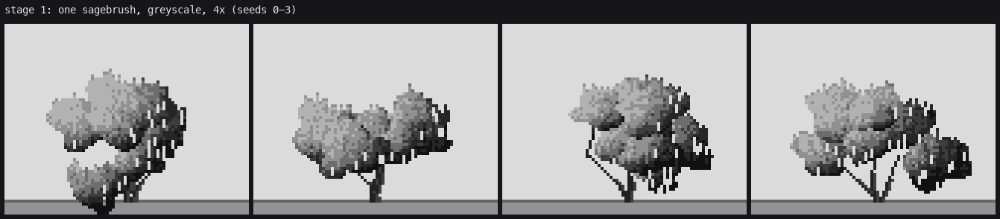
Tuning the skirt and shortening the trunks (version b) made it a slightly better tree.
The instrument. Instead of guessing again, I cropped five photos to one bush each and box-downsampled them to 64 px, the width I was painting at:
im = Image.open(f).convert('RGB').crop(b)
s = im.resize((64, int(64 * im.height / im.width)), Image.BOX)

Everything I needed was there:
- a packed row of pale upright tongues 2–4 px wide with dark slots between;
- foliage almost to the ground;
- the darkest shape inside the lower middle;
- no trunk visible except as tangle.
It took me until the third model to believe it. How-to 1 teaches it, and it's the one thing the critics asked to lend to everyone.
Model 2: upright sprays. I rewrote sage.py around the sheet: clumps, each hanging upright capsules lit at the cap and darkening downward. The first result was a weeping umbrella, with all the sprays hanging from the clump tops:

Then I let caps start lower down each clump (cap_bias), shortened the sprays, and shaded the dark body by the big form. That gave the 8× comparison against the grey photo:

It was close, but the sprays were one size and the mass read as knitting.
Model 3: form field + marks. Ferrari's hedge method: a continuous light field over the clumps, quantized to three calm base values, with the light carried by marks whose density follows the field. I iterated through versions i, j and k (dabs too square, then too thin, then the density ramp tuned):

That was a legible mound, but the critic's round 3 called its texture rain: even 1-px ticks at one spacing everywhere, a scalloped base, and stray near-black glyphs in the light.
Model 4: grouped sprigs. The critic's key note was "group the ticks into clumps and open gaps between them". It's what the downsampled sheet had said from the start. _sprig_marks does it:
- a dark interior;
- sprigs placed from the interior mask, weighted toward the top;
- each sprig a small upright wedge that reads its value once from the field at its centre, lit on top and on its sun side, darker down, streaked inside;
- a shadow sprig never enters the light family.
Then the foot was made ragged, and _open_crest removed the dark interior line left along the top of the silhouette. The layers are in how-to 3.
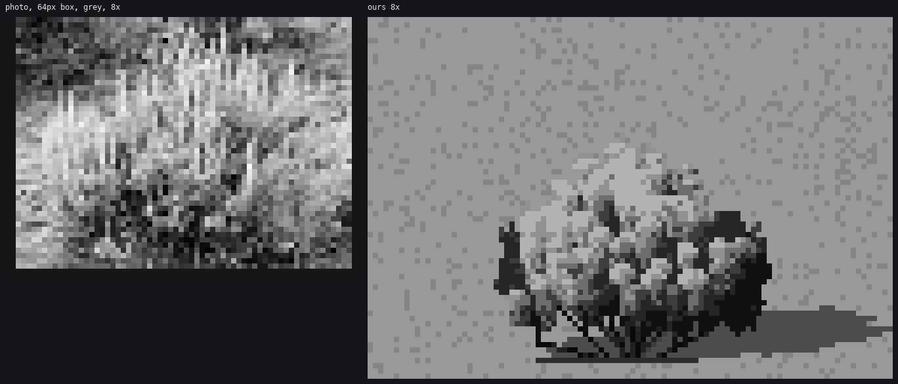
What I'd tell anyone: I spent three models trying to get a texture right on the wrong grouping. The grain was fine at every stage. It was the decision unit that was wrong: per pixel, where it needed to be per sprig.
Stage 2: colour, and the bush in the world
The palette went in next (palette.py, how-to 5): per material, colour(step) = albedo × (sky occlusion × sky + sun fraction × sun), in linear light, then OKLab hue shifts at both ends. The first swatches had a brutal terminator and black shadows:
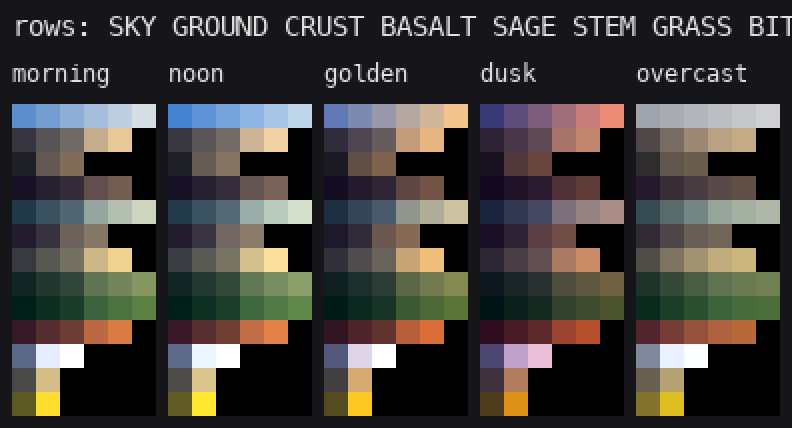
The first sage in colour was mint, with teal shadows:
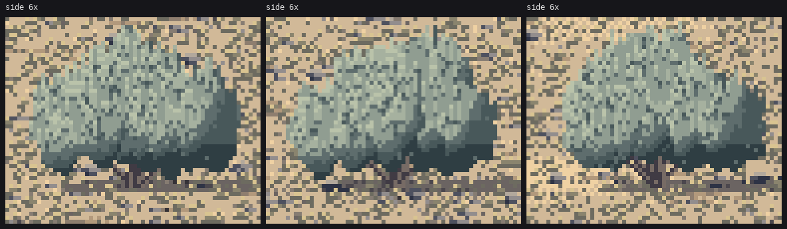
Then the whole world went in at once. I wrote world.py:
- two cameras (30° iso, standing perspective);
- world-space ground, where every noise is a function of metres and sized by pixels-per-metre, so nothing swims when the camera moves;
- pebbles and small grasses on world grids, drawn only when they're at least a pixel.
scene.py added placement, level of detail by pixel width, cast shadows projected through the camera, and contact. The first two scenes, 3×:
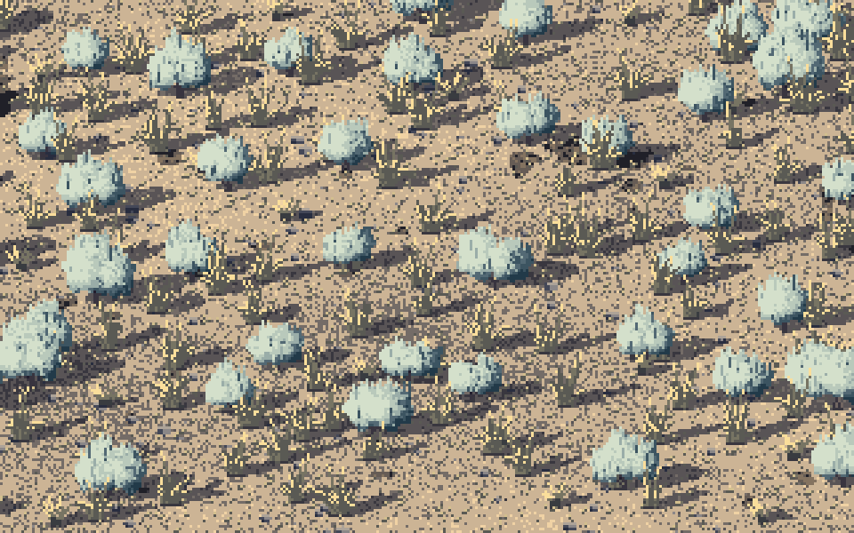

The iso was mint snowballs on salt-and-pepper sand. The standing view had a sea of bushes with no distance at all, full contrast to a ruled horizon. The ground was the loudest thing in both.
At this point I launched a critic subagent, with a brief pointing it at my images, the photos and three Ferrari scenes. When it went to write its CRITIQUE.md, it found the studio's own second-round critic had already written rounds 1 and 2 there, so it headed its entry round 3. From then on the studio critic kept reviewing on its own (rounds 4, 5 and 6, and a closing read). Nearly every fix below answers one of their notes.
The fixes in this stretch, in order:
- Calm ground. Flat lit loess, value masses meeting on a broken edge instead of a dithered halo, sparse specks. Before and after, iso:


- Crust patches that fade out through density. The first ones were stamped ovals, "stickers" (round 3).
- Olive shadows, a straw-warmed lit end, and warm hours warming the sage crowns ("golden hour on the ground only", round 3).
- Distance. Sprites past 30 m collapse to two values; the palette's haze lifts darks far more than lights; past the 2-px shrub the sage is painted into the ground as a far "sea" of flecks over a swale field; a basalt rim on the horizon.
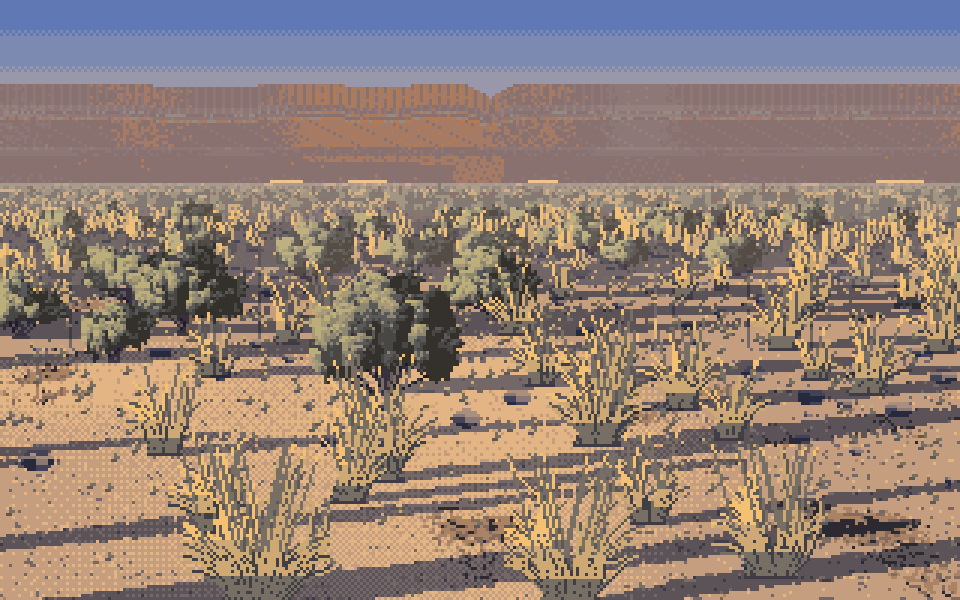
- Grass in drifts, not one tuft per bush ("everything comes in pairs", round 3).
Bug: two minutes for one frame. The drift placement first ran in a Python loop, one fbm call and one distance-to-every-shrub per tussock, and the render passed the two-minute timeout and went to the background. I killed it and rewrote it vectorised, with a scipy.spatial.cKDTree over the shrubs. I also stopped generating sprites past the distance where they'd be under a pixel (_zvis). The frame went from about a minute to about ten seconds.
The sprig bush in colour
With the scenes roughly right, I went back to the single bush in colour at 6×, the version the critics had been looking at. Model 4 in colour, first try: big sprigs, big gaps, a scalloped foot. Then denser, narrower sprigs, and a stem tangle that at first ran down every column like a picket fence:
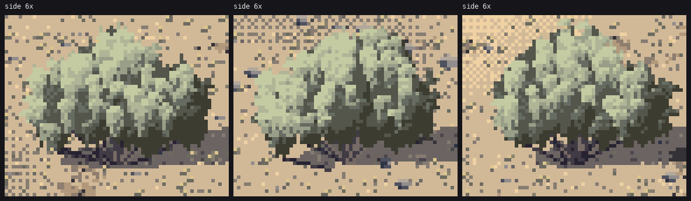

g: a stem to the root crown from 12% of the columns only. h: plus the open crest.
Stage 3: ponderosa
pine.py, how-to 8.
- The bark worked on the first try: a Voronoi squashed 3:1 vertically, furrows where the nearest two seeds are nearly equidistant.
- The crown took six versions: coat rack → topiary → smooth blobs → log-normal pad sizes with sky holes. Small trees needed their own fill rule, or they went back to coat racks.
I looked at the conifers student's trees first for their vocabulary, and kept the ponderosa's own: open and clumpy, not a spire.


Stage 4: the rim and the parkland
The coulee rim (backdrop.py) went through five versions and never got to columns. The first was a picket fence:

Then big lit and shadow planes, because the wall wanders in and out; then V11AM-style paired flutes; then slanted headland edges. It's still bands. How-to 9 has what I'd do.
The first parkland scene showed the tussock problem plainly: every tussock a grey comb, the same value as its own shadow.
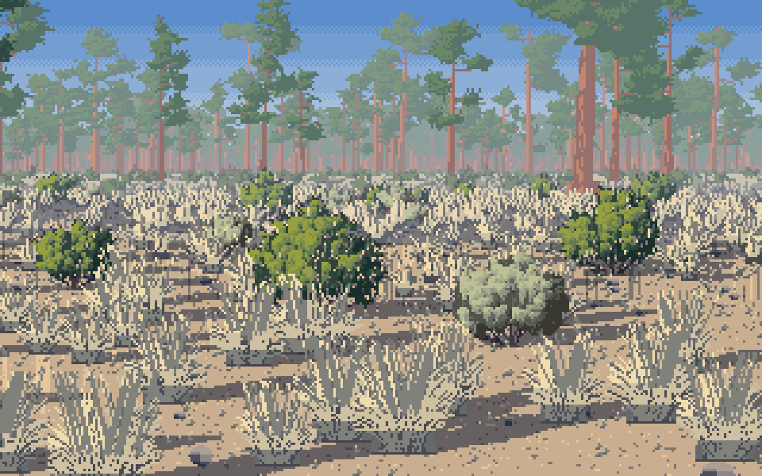
The tussock
Bug: a 6.5 MB grass.py. Rewriting the tussock, I replaced a block of code with a script: old = s[s.index(" arr = np.full(...)"):s.index(" # seed stalks")], then s.replace(old, new). The next import died with an IndentationError on line 1, and wc -c said the file was 6,576,861 bytes. The string " # seed stalks" first occurred, earlier than I meant, inside a comment in the params dict (stalks=0.3, # seed stalks rising above), so the slice was empty. str.replace("", new) inserts new between every character: 7,810 characters × about 840 characters of new code is the 6.5 MB. Replacing new with "" recovered the original exactly, and then I made the edit by hand with the Edit tool. Lesson: when you slice between two markers, assert the slice is non-empty.
Then came the actual lesson of the tussock. I had been pairing every lit blade with a dark gap, which is V11AM's backlit stroke reversed. V16PM's golden bank is a flat lit mass with a few dark strands. Four iterations on one tussock at seven sizes got there (how-to 4):
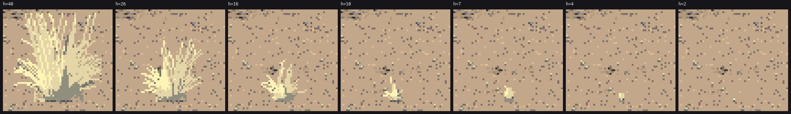
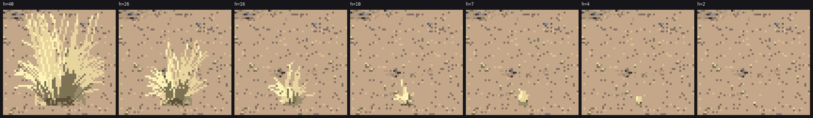
Along the way, straw had to be pulled paler and yellower than the loess, or the tussocks vanished into the ground:

Stage 5: seasons, sheets, heroes
Seasons:
- spring: green grass, a greener sage, balsamroot patches;
- summer: straw and seed stalks;
- autumn: sage flower stalks;
- winter: snow.
The critic's round 5 caught the winter's ruled snow edges. Snow drifts against the lee side of each shrub and melts back on its sunny side, so the patches now follow the plants:
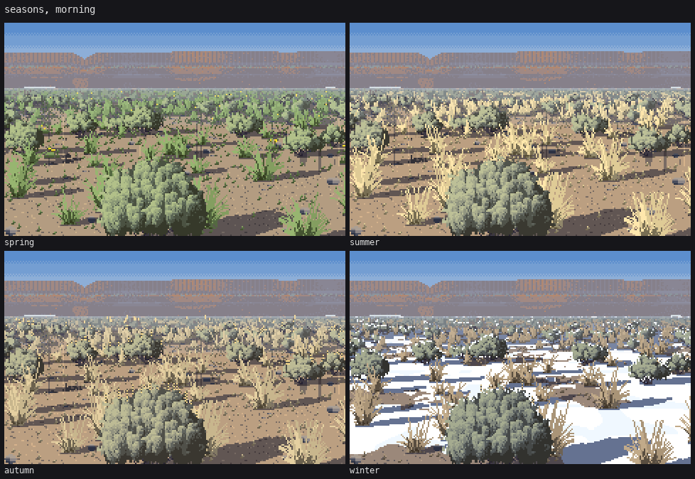

Sheets. sheets.py makes seven sheets, A–G. Rendering them showed problems no single image had:
- Sheet B (plant × size): small pines were coat racks, and the smallest sage and grass vanished. I gave both a never-vanish 2-px form.
- Sheet F (the zoom ladder): small tussocks turned the ground to salt and pepper from about 10 px/m down. I made them merge into the ground's tone, with a keep probability that ramps with size so there's no pop.
- Sheet A: the overcast column still had cast shadows. I turned them off for overcast.
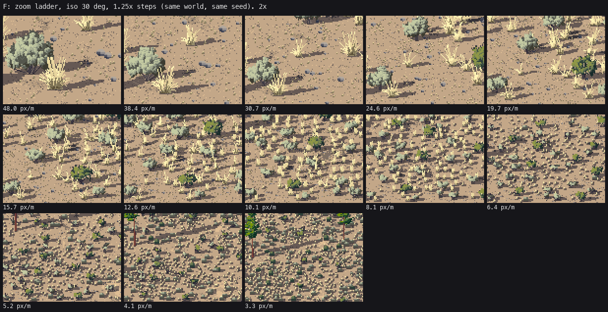
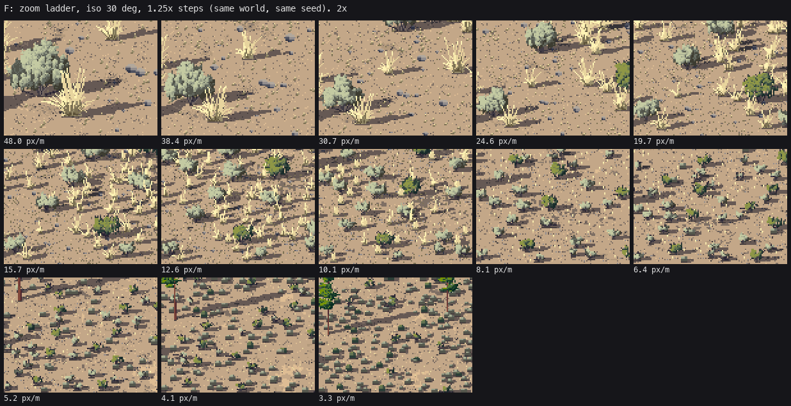
The heroes are four scenes at 480×270. The critic's round 6 and closing read judged these ready:
- the standing sage flat at golden hour;
- the four seasons;
- the sage form;
- the tussock;
- ponderosa bark.
And these not ready:
- the rim;
- even spacing;
- sage at hero size drifting to cauliflower;
- balsamroot as tiles;
- crowns as lollipops at middle distance;
- bitterbrush;
- the far iso.
The last check: photo | ours | Ferrari, side by side. It showed my key is paler and more pastel than both. I wrote that into LESSONS.md as a fault. It is one.
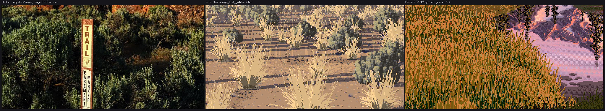
What I'd do differently
- Downsample the photo before the first model, not after the second. It would have saved three models.
- Stay longer on the master copy, and copy V11AM's mesa too. The rim is my weakest element, and it's the one where Ferrari had painted the closest thing.
- Decide the decision unit before the texture. Every mass that worked (sage sprigs, pine tufts, dark grass strands) worked because each mark was one decision. Every one that failed was sampled per pixel.
- Build sheets earlier. Sheet B and sheet F found more real faults per minute than anything else I made.
- Assert your slices.